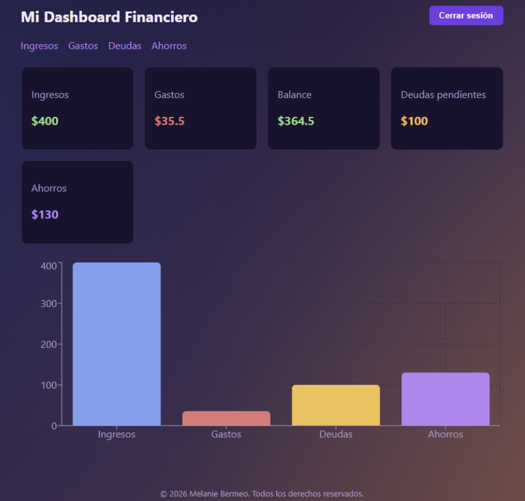

SmartFinance AI
Aplicación web de finanzas personales que permite registrar ingresos y gastos, y visualizar el estado financiero del usuario en un solo lugar.
Problema que resuelve: Muchas personas pierden el control de sus finanzas por falta de herramientas simples y centralizadas.